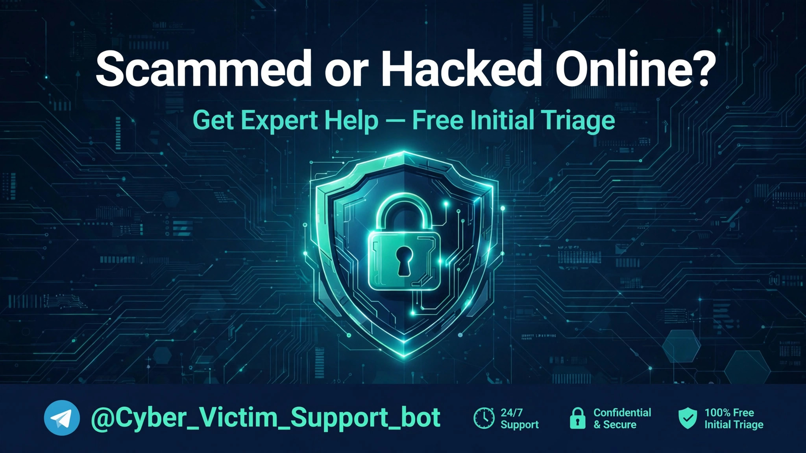

Cyber Victim Support is a free Telegram bot built by a Cyber Security Specialist. Report an incident in a few guided steps, receive a case ID, track your case status anytime, and read free security guides for the first critical hours.
Open the Bot — Free Triage → See Services & Prices🔒 The bot never asks for your password, OTP, seed phrase, private key, or full card number.
No forms, no phone queues. Everything happens inside Telegram, in about two minutes.
Choose your situation — hacked account, financial scam, phishing, impersonation, extortion/blackmail, marketplace fraud, crypto or romance/investment scam, malware, harassment, or other — and answer a few guided questions.
Your report is filed under a personal case ID (format CYB-2026-NNNNNN). Open My Cases in the bot anytime to see the current status of your case.
Follow the free Security Guides for your first steps, or let a specialist review your case in depth. Initial Triage is free; deeper help is priced clearly in Telegram Stars.
Paid inside Telegram with Stars — no card details are ever requested by the bot.
| Service | What you get | Price |
|---|---|---|
| Initial Triage | Guided incident report, case ID, case status tracking, and access to the free Security Guides. | FREE |
| Incident Review | A specialist reviews your case and gives you a prioritized action plan: what to secure, what to report, and in what order. | 100 Stars |
| Detailed Analysis | A deeper analysis of your evidence, accounts and timeline, with a full step-by-step recovery and safety plan. | 200 Stars |
| Human Consultation | A 1-to-1 consultation with a Cyber Security Specialist who walks you through your case personally. | 300 Stars |
Incident categories covered: hacked account · financial scam/fraud · phishing · impersonation · extortion/blackmail · marketplace fraud · crypto scam · romance/investment scam · malware · harassment · other.
Cyber Victim Support will never ask for your password, OTP or one-time code, wallet seed phrase, private key, or full bank card number. No legitimate support service needs them.
Scammers run "recovery" scams that target victims a second time. If anyone contacts you asking for a password, a code, or an upfront "recovery fee" — in any app — stop. That is not us, and it is not help.
Honest answers — including about what this service cannot do.
Yes. Filing a report, receiving a case ID, tracking your case status, reading the Security Guides, and the Initial Triage are all free. Only the optional expert services (Incident Review, Detailed Analysis, Human Consultation) are paid, in Telegram Stars.
No service can honestly guarantee that. Bank transfers reported immediately are sometimes reversible; crypto transactions almost never are. What Cyber Victim Support provides is a structured report, correct procedures, evidence guidance, and account-security steps — the things that genuinely improve your outcome and protect you from further loss.
Stop contact but keep evidence (screenshots of chats, profiles, links, transaction IDs). Secure your email account first, then banking and social accounts with new passwords and two-factor authentication. Contact your bank through the official app or the number on your card. The bot's free Security Guides walk you through this in order.
Because it doesn't need them — and neither does any legitimate helper. Passwords, one-time codes, seed phrases, and private keys are the exact things scammers ask for. Asking for them is the clearest sign of a "recovery" scam.
No. Always report fraud to your bank and to your local police or cyber crime unit as well. The bot helps you organize your case, keep a trackable record, and follow the right steps — alongside, not instead of, official channels.
Prefer to speak with the specialist directly? Use any of these official channels.